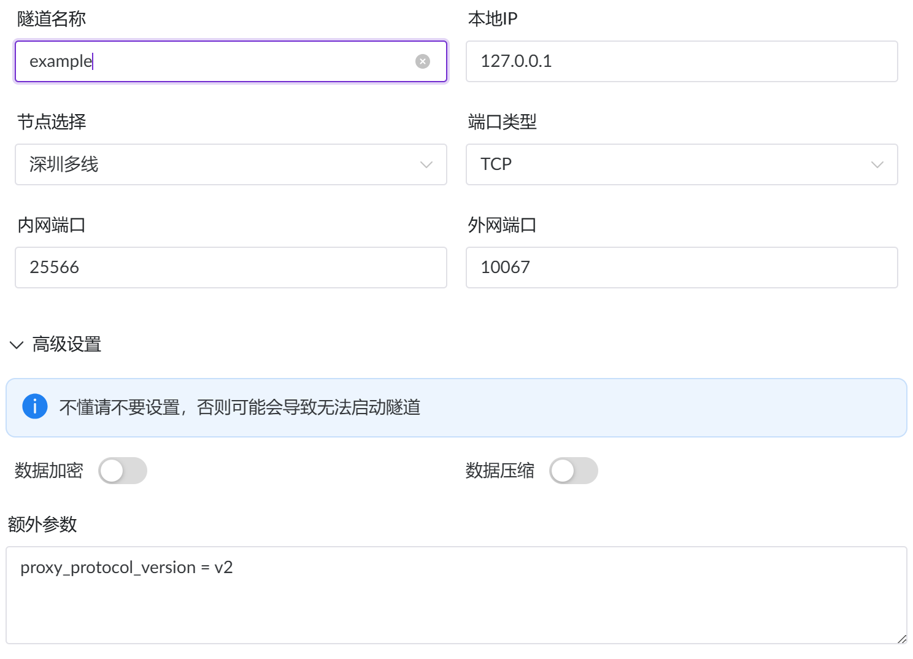
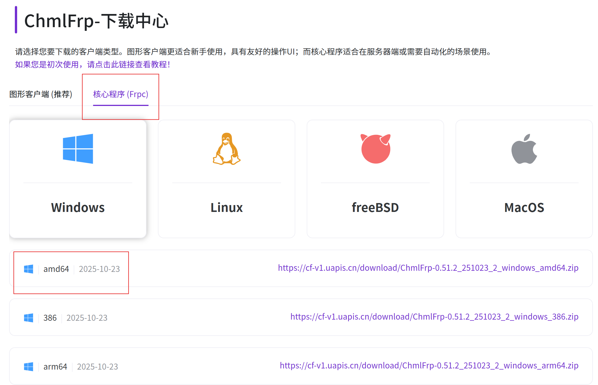

v1.0 | 作者 AXFJ | Github | 文档遵循 CC BY 4.0 协议。
English | 中文
在 RadminVPN 等虚拟局域网下开服，经常会遇到恶意破坏的玩家。由于虚拟网络的特殊性，用户可以使用特殊手段切换IP，因此ban-ip并不能有效地阻挡破坏者。
（涉及游戏通信协议技术，不想看可以跳到下一节）
原版游戏有 /transfer 指令，该指令可以将指定玩家转移到另一个服务器。因此，通过使用一个特殊服务端，在玩家一旦加入服务器后立即发送 ServerTransferS2CPacket 到我们的另一个处在公网IP的服务器，从而以公网IP进入服务器。
需要注意的是，这个过程对于客户端是不透明的。因此，别有用心的玩家可以修改客户端使其接收到转移包后，发现是目标服务器是公网IP后立刻断开连接。不过这样也无大碍，毕竟他无法进入真正的服务器。对于这类可能存在的拒绝进一步连接的客户端即是可疑IP。
准备好这些：
然后就可以开始配置了。
打开 Transfer Server Router。 应该会显示如下日志：
Transfer Server Router v1.0 by AXFJ
See https://github.com/AXFJ/Transfer-Server-Router.
[2026-08-24 18:12:50] [INFO] [-] Configuration file tsr_server.properties does not exist, using default configuration and creating default file.
[2026-08-24 18:12:50] [INFO] [-] Listen on：0.0.0.0:25565 -> example.com:25565
[2026-08-24 18:12:50] [INFO] [-] Protocol Version：774
[2026-08-24 18:12:50] [INFO] [-] Limitations：Total Concurrent=5, Per-IP Concurrent=2, Rate=1.0 req/s, Timeout=15s
这时就可以关闭程序了。
此时程序文件夹下会多出一个 tsr_server.properties，是转移服的配置文件，打开它，找到如下几项：
ip=0.0.0.0
port=25565
这是转移服要运行在的位置，建议使用默认25565端口，其余按照自己需求修改，ip 一般无需修改。
target-ip=example.com
target-port=25565
这是转移服在玩家连接后将要转移的位置，稍后我们会修改。其它项一般无需修改。
启动转移服。
如果你有公网地址，跳过这一节。
这个部分将会使用ChmlFrp进行演示，使用别的也行，操作大致相同。
打开ChmlFrp，注册账号。
打开仪表盘，找到“隧道管理”。
选择你喜欢的节点创建一个隧道。

内网端口是你的服务器运行的端口，外网端口可以任选。 “额外参数”一定要填写如下：
proxy_protocol_version = v2
此时，你可用把 tsr_server.properties 中的 target-ip 和 target-port改成你的隧道信息了。推荐使用25566端口。
从你的内网穿透官网下载核心文件命令行客户端，这一点很重要。

找到仪表盘上“配置文件”一栏，进去选择你的节点和隧道，点击生成。此时你会看到“启动代码”一栏内有一行bash脚本，类似这样：
frpc.exe -u uwDm8l...XgpzX -p 319120
复制它，放到核心文件 frpc.exe 目录下运行。
如果没问题，此时frp已经启动成功。
至此内网穿透部分配置完成
从 Paper 官网下载 1.21.11 服务器核心。更高或更低的版本可能兼容，建议先使用 1.21.11 版本
保存到任意文件夹，打开终端运行：
java -jar paper-1.21.11-132.jar
出现“Done”时关闭服务器，进行进一步配置。
打开 server.properties，修改如下几项：
accept-transfers=true
...
ip=127.0.0.1
port=<你内网穿透中设定的隧道本地IP>
...
这里必须把ip设置成127.0.0.1。
对于 Paper 系服务器：
config\paper-global.ymlproxies:
...
proxy-protocol: false
...
proxy-protocol 改成 true。对于非 Paper 系服务器（上游 Spigot 也算），需要安装插件，这里不多赘述。以下是参考：
启动服务器。
至此，所有程序已经配置完成。现在打开游戏客户端，输入你的虚拟IP（转移服的端口），看看是否连接到了公网服务器，以及服务器后台是否显示了你的公网IP。
出现任何问题，先把教程从头到尾再过一遍，如果还是有问题，可以联系我。
QQ：3647980885
邮箱：its-axfj@outlook.com
哦对了，如果你要使用广播器请使用仅LAN模式。